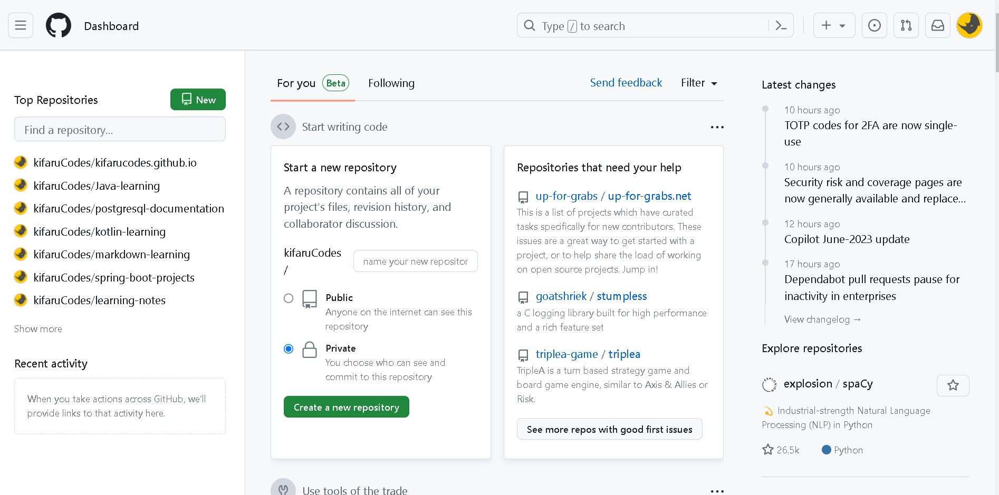
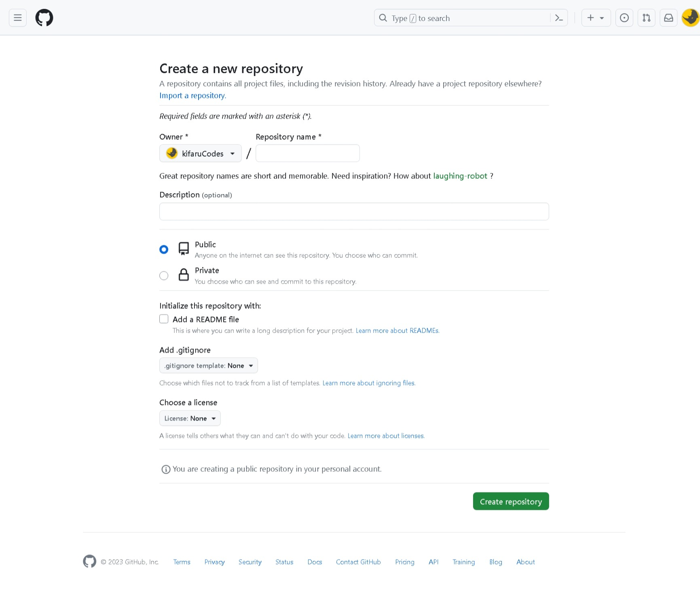
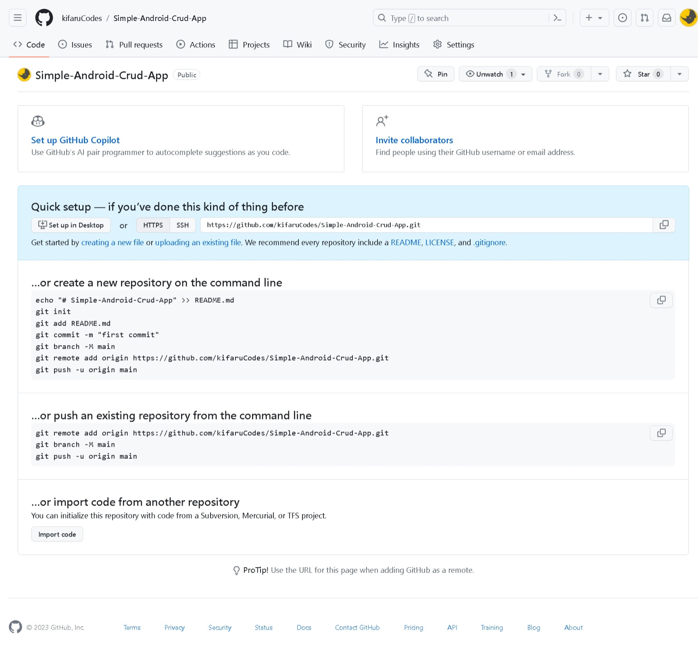
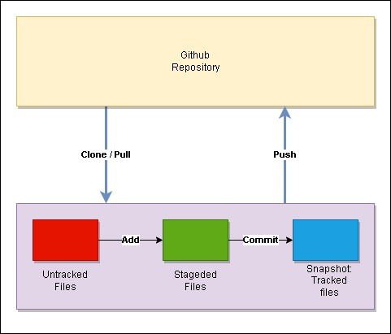
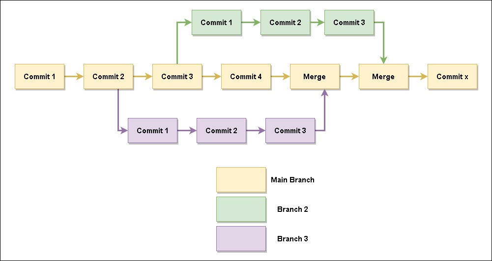

What is git? Git is an opensource version control system that is widely used for tracking projects and collaborative efforts.
But what is version control? This is the tracking of files or documents, and is widely used by programmers/coders to track changes to their programs/projects. Basically, when a programmer makes changes to their program/project, they can save them over time, and can choose to view changes made historically or even revert to an initial save point. This is useful as one can track the different changes made over time, view the different versions of the program they have implemented (ie v4 vs v1) or even kekep track of bugs that might have come up during development (If a bug came up, they can revert back to when there was no issues and make comparisons).
Git vs Github: There is a common misconception between Git and Github. Git is the open source version control system, while Github is a cloud platform where your git repositories are hosted.
It is interesting to note that Github is owned by Microsoft, which is currently the largert open-source contributor
Reference:
Below is a list of common terminologies with Git, and shall be commonly mentioned
To get started, you will need to create an account on Github. Alternatively there is Gitlab, SourceForge or BitBucket, but I shall be continuing with Github.
On creating an account you should have a dashboard as shown below, with a number of features

You can create a repo from the left section of the dashboard (as shown on the above image), and you can view all the repositories you currently have

You have the option of creating a private or a public repository.
On creating the repository, you should get the below, which gives you different options on setting up your repository on your command line.

On setting up your repository on your local computer (based on the above options), it is good practice to set up a README.md file. This is a file the helps you document the project set up in your repository, and gives more information to your viewers. The readme files are written in a language called Markdown, an you can read more about it in my documentation Here
Below is a description of the commands mentioned above:
git init :
This command creates a new git repository in a directory/folder.
git add README.md
Stages the README.md file onto git. Alternatively you can use git add . to stage all the files in the repository.
git commit -m "message"
Tracks the staged files in the repository with a commit message
Alternatively you can make a commit with a message and description, eg git commit -m "message" -m "description"
git branch -M main
Forcefully rename the current branch to main
git remote add origin link-to-git-repo.git
This adds a remote repository to your new local repository
git push -u origin main
Send the code to the the cloud repository
The -u tag sets the upstream of the branch we are pushing to.
The upstream is basically a link between the local repo branch and the online repo branch
This will therefore tell git to push the local branch to the set upstream branch, and therefore we do not have to specify the branch we are pushing to anymore. We can push the local changes only using git push
On setting up the repo on your local computer as described in the previous section, one will add project files and/or make changes. Makingthese changes, then next thing would be uploading them onto the cloud repository. This would follow a number of steps as illustrated below:

git add files : This will stage the new files added or modified in the local repogit commit -m "message" : This will create a snapshot of the project and start tracking the new filesgit push -u origin branchNameIn a project there are files that one would not want to be tracked, such as API keys or any other sensitive files. The links to the files are stored in a .gitignore file, and will be completely ignored by Git ie, they will not be tracked at all.
In the previous sections we have gone through working with the default branch (main), however when working in a team, you one might want to have a different line or channel where they do not affect the changes on the product being worked on. This therefore brings about the concept of branches
Branches are basically a different line/channel where you can work on your area, then when done, merge it back to the main section. This is common on collaborative development, which minimizes issues and errors

To create a new branch we enter the command:
git branch new-branchHowever you might want to create a branch on a different revision, which can be done as:
git branch branch-name commit-hashgit log
NOTE: Git uses SHA1 hash function to identify contents of repositories by default. (Reference)
A hash is a 40 character hexadecimal string that acts as a unique identifier and is generated by a hash function. One can however use the first 8 characters in git to identify a commit.
After creating your branches, you can view the list of all your branches by:
git branch* symbol.
We can view more details about the branches through:
git branch -vTo switch between branches, we can use:
git switch branch-namegit checkout branch-namecheckout has a lot of different usages, which can be ambiguous or confusing)
Renaming branches can be done in different ways:
git branch -m new-branch-name: This will rename the current branch that you are in
git branch -m old-name new-name: This will rename another branch on your local repository
git push origin --delete old-name
git push -u origin new-name
To push a branch to a remote repo, we simply use:
git push -u origin branch-nameTracking branches is the process of connecting a local branch to a remote branch. A case scenario is when one wants to start contributing to a remote branch others are working on.
To start tracking a remote branch, we can use the command:
git branch --track remote-branch origin/remote-branchAlternatively, we can use:
git checkout --track origin/remote-branch
To delete a branch, you need to make sure that you are not in it. If you are, you shall have to switch to another branch using the swithch command.
After you are out of the branch you want to delete, use the following command to delete it:
git branch -d branch-name
In the event that your branch has changes that are not present in another branch (not merged), then git shall bring in an error. This can be overridden by using the -f tag (force). Therefore the full command shall be as:
git branch -d -f branch-namegit branch -df branch-nameDeleting a remote branch can be done with the following command:
git push origin --delete branch-name
After making the changes you want on your branch and tested your code, you will want to merge the changes to the main branch. To do this, you will first need to switch to the main branch:
git switch maingit merge branch-nameIn some instances one would find themselves with an error where they would try to merge a branch to the main, but the changes in the main would be different from those on the branch being merged to. An example is where a line from the main branch differs from the merging branch. In this instance we have a Merge Conflict
with merge conflicts, you will be faced with an error as below:
$ git merge branch
Auto-merging file.md
CONFLICT (content): Merge conflict in file.md
Automatic merge failed; fix conflicts and then commit the result.
To solve this, we have a number of work-arounds.
In this instance you want to cancel the merge completely, as you might have changed your mind. To do this, run the command:
git merge --abortThis will keep the changes from the branch being merged to (in most instances the main branch, hence keeping the original changes)
This will take the changes from the branch that is trying from.
This will combine the changes from both the files and have both inputs in one file
After deciding what changes to keep, you will have to add the file and make a commit
With this you have solved the merge conflict.
Below is a list of the basic commands which are commonly used in everyday git application
git clone repo-link.git : Copy another repository onto your local computer/system
git add file : stage new and/or modified files on your repository for tracking.
git status : View the status of files in a repo.
git commit -m "message" : create a snapshot of the repository at a certain point (ie track your files...save a version of the entire project onto git at a certain point in time).
It is important to note that each commit has extra information such as what time & date the commit was made, who made the commit and the commit message.
You can also view the history of previous commits and also revert back to a certain commit. This is important when collaborating with others, where you can ask the author what the changes they made were about ect.
git push : send the saved commits to a cloud repository
git pull : Download the updates from a cloud repository to a local computer/system
git log
Get the history/logs of all the commits made for a repository, from the latest to the earliwst commit
You can use git log --oneline to view a compressed/summary version of the commit logs
git show "commit-hash"
View the details of a commit.
"commit-hash" is the hash code of the commit. You do not have to copy the entire hash string as the first 7-8 characters are enough.
diff
git diff: View the changes made between the staged and the unstaged files.
git diff [branch-A] [branch-B]: View the difference between two branches.
git revert [hash-code]: Undo a commit by reverencing the hash code.
© Copyright Kifaru Codes. All Rights Reserved.
Designed by KifaruCodes